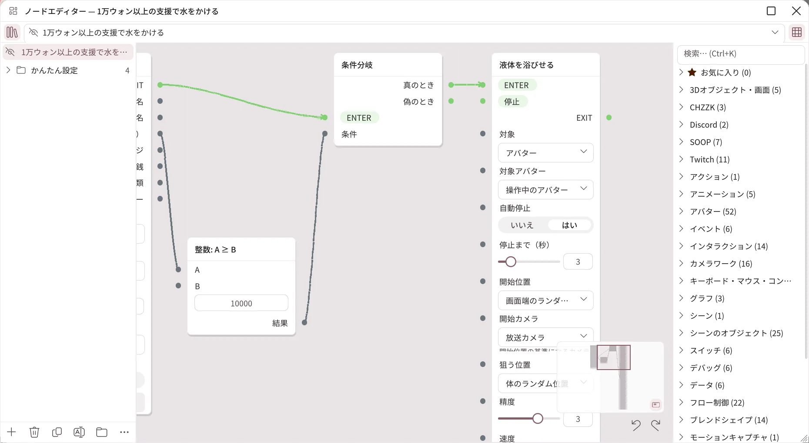
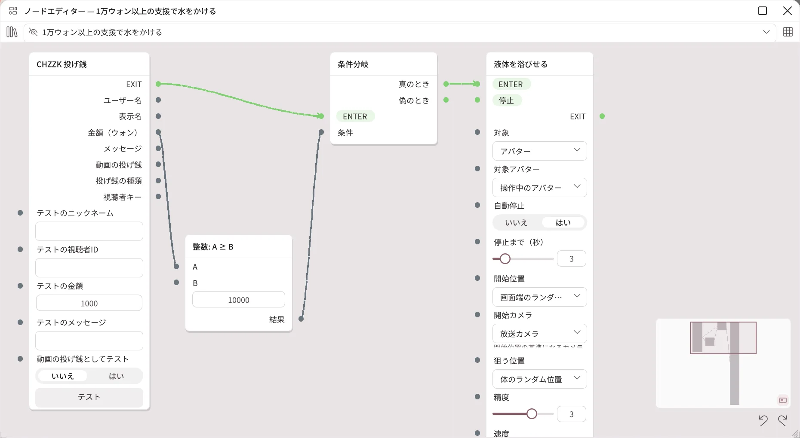

ノードエディター
2.2.0 で追加された機能です。2.1.2 以前にはありません。
ノードを線でつないで、「どのイベントが届いたら、どんな条件のときに、何をするか」を自分で作ります。かんたん設定では足りないときに使います。編集と実行はProででき、Basicでは表示・移動・拡大・縮小だけができます。配信連携の機能なので、現在はベータです。
かんたん設定と何が違いますか？
| かんたん設定 | ノードエディター | |
|---|---|---|
| 作り方 | リストからトリガーとアクションを選びます。 | ノードをドラッグして置き、線でつなぎます。 |
| できること | 投げる・液体・ステッカー・照明・アバターのアクションなど、決まった反応 | 計算・変数・分岐・繰り返し、カメラ・ライト・表情・ブレンドシェイプ・ボーン・キーボード・マウス・WebSocketなど、約400種類の基本ノード |
| 向いている場合 | 1つのイベントに1つの反応 | 複数の条件を組み合わせたり、反応を順につなげたりしたいとき |
かんたん設定の項目も、内部ではグラフとして動作しています。項目を開いて ノードエディターで開く… を押すと、その項目が作ったグラフを見られます。
エディターを開く
- 配信 → インタラクションを開きます。
- ノードエディターカードの ノードエディターを開く… を押します。
- アプリ内にエディターのウィンドウが開きます。タイトルをドラッグして移動し、端をドラッグしてサイズを変えます。右上のボタンで大きく表示したり閉じたりします。
閉じてもグラフはそのまま残り、動作し続けます。

| 場所 | できること |
|---|---|
| 左上の本のアイコン | グラフ一覧を表示・非表示にします。 |
| グラフの選択 | 編集するグラフを選びます。目のアイコンでグラフをオン・オフします。 |
| 右上のグリッドアイコン | ノード一覧を表示・非表示にします。 |
| グラフ一覧の下のボタン | グラフの追加・削除・複製・名前を変更・グループを作る、⋯メニュー（自動整列、読み込み・書き出し）です。 |
| ノード一覧 | 分類ごとのノードです。Ctrl+Kで検索し、星印でお気に入りに入れます。 |
| ミニマップ | 右下でグラフ全体を見て、クリックするとその場所に移動します。 |
| 元に戻す・やり直す | Ctrl+Z、Ctrl+Y |
新しいグラフはオフの状態で作られます。作り終えたら、目のアイコンでオンにすると実行されます。
ノードと接続
- ノード一覧からノードをキャンバスにドラッグして追加します。
- ノードの右の点（出力）を、別のノードの左の点（入力）へドラッグしてつなぎます。
- フローの接続（緑の線）は実行の順番です。EXITからENTERへつながります。
- 値の接続（灰色の線）は、金額や名前などの値を渡します。
- フローと値はつなげません。つなげない場所に置くと、理由が表示されます。
- ノードを右クリックすると、削除・複製・接続をすべて解除のメニューが出ます。
- つないでいない入力は、ノード内の欄に値を直接入力します。
例：1万ウォン以上のドネーションで水をかける

- グラフ一覧の + で新しいグラフを作ります。
- ノード一覧のCHZZK分類から CHZZK 投げ銭 をドラッグして置きます。ドネーションが届くとEXITからフローが出て、金額（ウォン）を値として出力します。
- 演算・文字列分類から 整数: A ≥ B を置き、投げ銭ノードの金額（ウォン）をAにつなぎます。Bに10000を入力します。
- フロー制御分類から 条件分岐 を置きます。投げ銭ノードのEXITをENTERに、比較ノードの結果を条件につなぎます。
- インタラクション分類から 液体を浴びせる を置き、条件分岐の真のときをENTERにつなぎます。
- 目のアイコンでグラフをオンにします。
- 投げ銭ノードのテストの金額に15000を入力し、テストを押して水がかかるか確認します。5000に変えてテストすると、かからないはずです。
イベントノードにはすべてテスト欄とテストボタンがあり、配信なしで試せます。グラフがオフのときは、テストも実行されません。
かんたん設定の項目をノードエディターで変更すると
- その項目には「ノードエディターで変更済み」と表示され、それ以上グラフを作り直しません。それ以降は、グラフが動作を決めます。
- 項目メニューの かんたん設定に戻す を押すと、項目の設定からグラフを作り直します。ノードエディターで変更した内容は失われます。
- 自動で作られたグラフのノードが重なって見える場合は、⋯メニューの 自動整列 を押してください。
グラフを共有する
⋯メニューの クリップボードに書き出し でグラフをテキストとしてコピーし、クリップボードから読み込み・ファイルから読み込み… で読み込みます。読み込んだグラフはオフの状態で入ります。他の人からもらったグラフは、内容を確認してからオンにしてください。